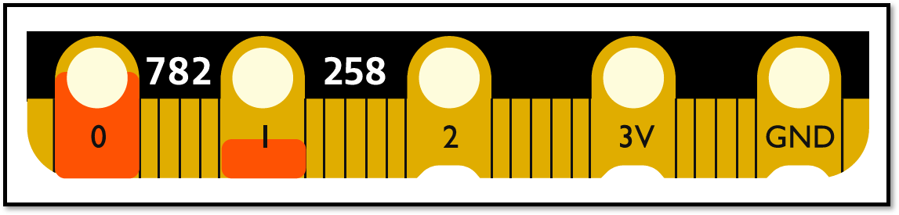
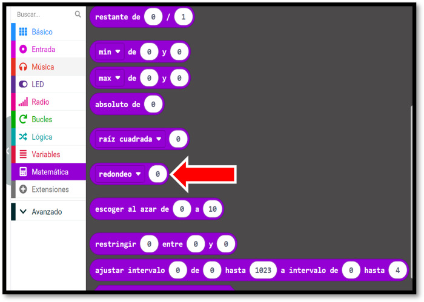
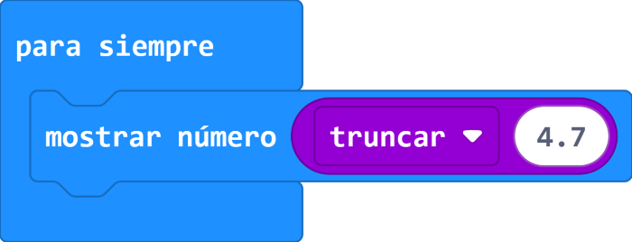
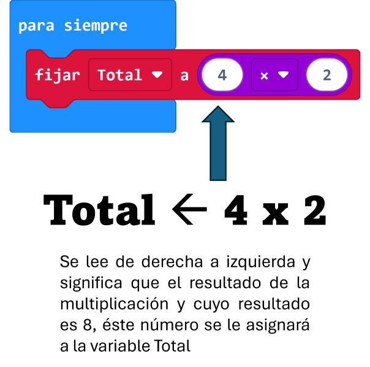
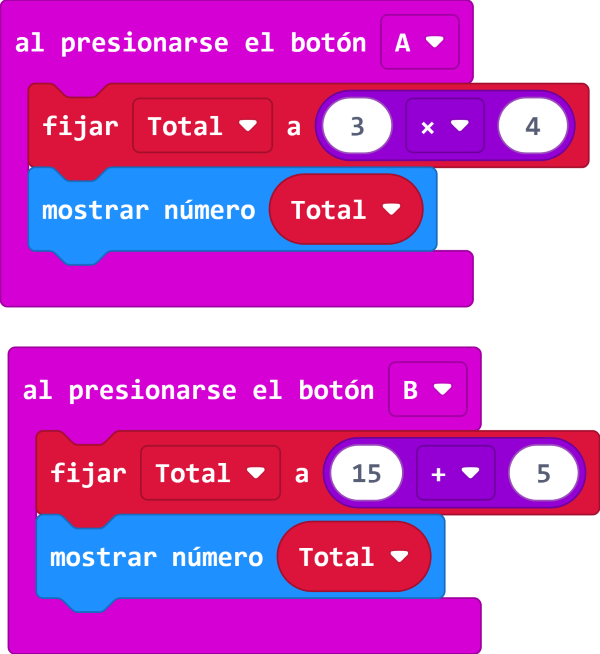
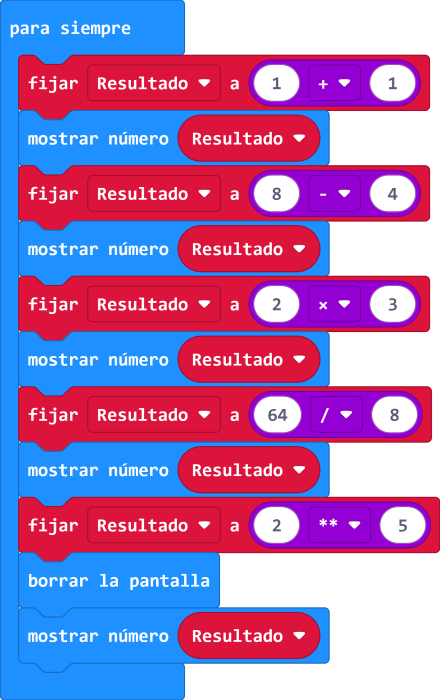
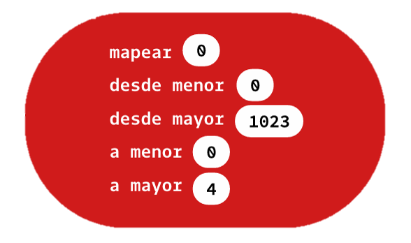
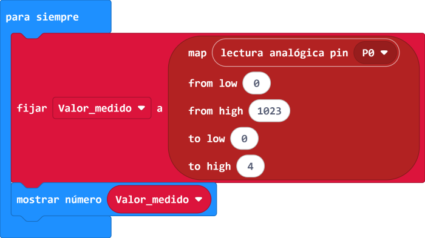

Leer valores de un sensor
El siguiente bloque permite leer los valores de un sensor conectado a un pin del microbit. La imagen del bloques es el siguiente:

En la siguiente imagen se muestra un ejemplo de uso en dónde se lee el valor del pin 0 y se guarda en la variable Número 1 y, también, se lee el valor del pin 1 y se guarda en la variable Número 2.

Para simular una lectura analógica solo basta hacer clic sostenido con el puntero del mouse sobre el pin que se quiera utilizar del microbit. En la siguiente se muestra dos lecturas mostrando valores diferentes en el simulador del makecode:

Bloque Truncar
El bloque Truncar elimina la parte fraccionaria del valor que se le coloque dentro de ella. En la siguiente tabla se encuentra mayores detalles para conocer sobre este bloque: Realiza el siguiente programa en makecode y verifica su funcionamiento lo encontraremos prime
| Para encontrar el bloque Truncar, primero debemos ir a la categoría "Matemática" y luego seleccionar el bloque redondeo y de ahí seleccionar sobre el triangulito negro para elegir la opción Truncar. Esto se aprecia en la imagen de la derecha. |  |
| Realiza el siguiente programa en el Makecode y luego cambia el valor de 4.7 con otro número fraccionario para ver su funcionamiento en el simulador del Makecode. |  |
Bloque operaciones aritméticas básica
En makecode se cuenta con bloques para realizar operaciones aritméticas básicas tales como sumar, restar, multiplicar, dividir y potenciación. Todas se encuentran en la categoría Matemáticas para poder utilizarlas.
| En la imagen inferior se utiliza la operación aritmética de la multiplicación y luego el resultado se almacena en la variable Total. | En la imagen inferior se encuentra un primer programa en donde al presionar el botón A se muestra el resultado de la multiplicación almacenada en la variable "Total". Realiza el programa y prueba su funcionamiento con el simulador del makecode. | En la siguiente imagen inferior se encuentra un programa que debes desarrollarlo y luego analizarlo cuidadosamente con la ayuda del simulador del programa Makecode revisando lo que va apareciendo en la pantalla del led del microbit. |
|  |  |  |
Bloque Mapear
El bloque Map reasigna el valor especificado de un rango a otro es decir, permite cambiar la escala de 0 a 1023 por del 0 al 4. Esto se aprecia en la siguiente imagen:

|
Realiza el programa que se encuentra a la derecha y pruébalo en el simulador del Makecode. Recuerda q previamente deberás crear la variable "Valor_medido" para encontrar los bloques relacionados de la variable. En el pin 0 se lee y, luego, se transforma de una escala de 0 a 1023 a una escala de 0 a 10. Nota que al momento de la simulación el valor o número que se muestra sea un número entero mas su parte fraccionaria. Pruébalo llevándolo a los dos extremos para verificar su funcionamiento. |
 |